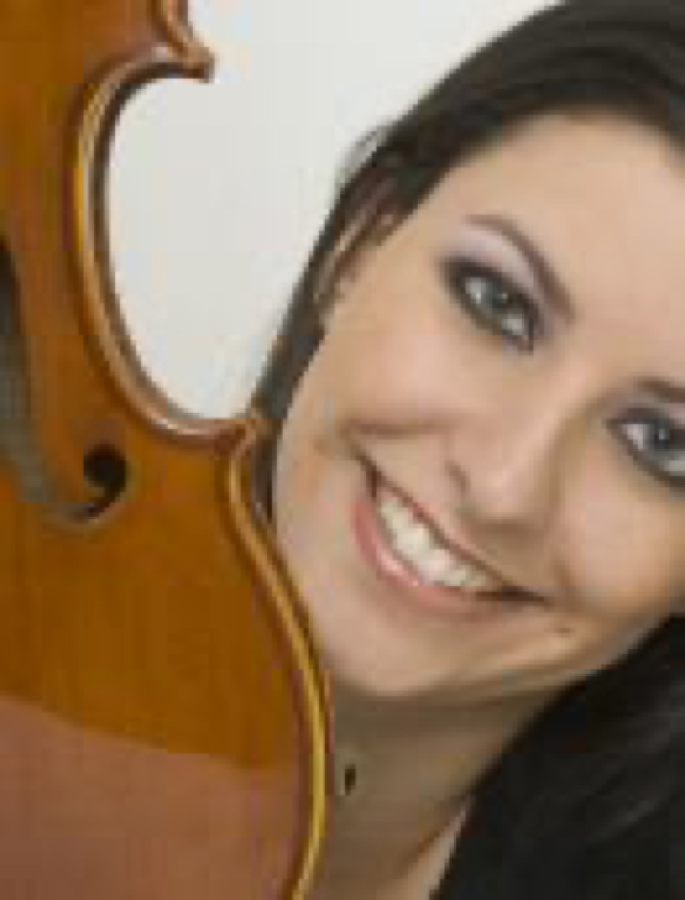

Ana Paula Cervellini (Coordenadora musical)
Viola e Violino
Ler biografia
Ana Paula é Musicoterapeuta (CPMT 176/06) graduada pela UNESPAR (Faculdade de Artes do Paraná) e coordenadora musical do Quartilis. Como musicoterapeuta, sabe que a música faz parte da história de vida de cada um e é capaz de despertar lembranças e emoções. Assim, utiliza seus conhecimentos para auxiliar na escolha das músicas e da melhor combinação de instrumentos para os eventos onde o Quartilis atua. Iniciou seus estudos no violino aos 8 anos de idade no Festival de Música de Campos do Jordão e atua em casamentos e eventos como violinista desde os 9 anos, junto ao Grupo Musical Cervellini (Presidente Prudente - SP). Cursou viola erudita na Escola de Música e Belas Artes do Paraná e já participou de diversas Oficinas e Festivais de Música (Londrina, Cascavel e Curitiba) como violinista e violista. Integrou a Orquestra Sinfônica de Presidente Prudente (SP) como violinista e a Orquestra da Escola de Música e Belas Artes (PR) como violista. É integrante do Quartilis (música para casamentos) desde 2002 como violista e violinista e integra também a banda curitibana Wandula.
.JPG)